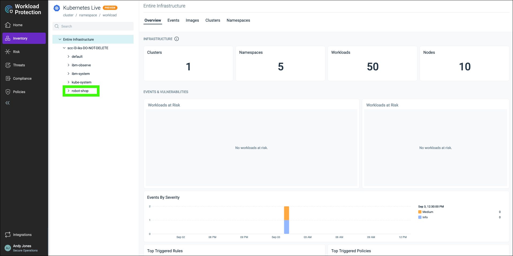

High-level demonstration of Workload Protection - NOT READY
THIS SECTION NOT READY TO BE REVIEWED!!! THIS SECTION NOT READY TO BE REVIEWED!!! THIS SECTION NOT READY TO BE REVIEWED!!!
IBM Cloud Security and Compliance Center Workload Protection (WP) offers functionality to protect cloud native workloads, get deep cloud and container visibility, posture management (compliance, benchmarks, Cloud Infrastructure Entitlements Management (CIEM)), vulnerability scanning, forensics, and threat detection and blocking.
This demonstration flow focuses on the integration between SCC and WP and provides a brief overview of the WP capabilities for protecting cloud native workloads.
- these kubernetes scan results are flowing into the SCC dashboard from WP. Here we see that in our SCC instance, we have integrated with an instance of WP. NEED A GOOD DESRIPTION OF THE RELATIONSHIP
WP provides multi-cloud support for IBM Cloud, AWS, Google Cloud, Microsoft Azure, and can also be used for on-premises kubernetes instances. However, in this guide, only resources in IBM Cloud are utilized.
In this scenario,
- view an existing attachment and results that utilizes WP to scan cloud native applications
- use the WP dashboard to learn more about WP's capabilities including NEED TO LIST WHAT WE ARE GOING TO DO HERE
View an SCC attachment scan results focused on Kubernetes deployment
- Open a web browser to the IBM Cloud Portal.
When the page loads, authenticate with your IBM Cloud ID and password. The authentication process varies depending on the primary account that your ID is associated with and any multi-factor authentication or other security controls in place for the account.
- Click the account selection drop-down menu and select the 2305900 - ITZ - ADHOC03 account.

Note, if the browser window is narrow, you might see an account selection icon like this:  instead of the full account name.
instead of the full account name.
- Click the Security and Compliance icon (
 ) in the menu bar.
) in the menu bar.

- Click Attachments in the left menu.

- Click the ellipses () icon for the IKS benchmark attachment - DO NOT DELETE attachment and then click View scan results.

This attachment performs a scan based upon the IBM Cloud Kubernetes Service Benchmark with these settings:

- Click the link for the first scan in the table.

- Explore the scan results using what you learned earlier.
The results of this scan are similar to the results of the other scans you explored earlier. You can expand the results for the helloworld application and describe the controls and assessments performed against that resource.
View more details using the SCC WP dashboard
Now is a good time to transition to looking at the additional details and insights available in SCC WP.
- Click the Security and Compliance link at the top of the page.
- Click Integrations in the left menu.
- Click the Open dashboard button.
The SCC WP dashboard will open in a new browser window or tab.

As you learned in the IBM Cloud Security and Compliance Center Foundation seller enablement material, SCC WP is a re-branding of Sysdig (https://sysdig.com/). This dashboard may look familiar to those who have use Sysdig in the past.
The setup of SCC WP is not covered in this scenario, but you can learn more about installing and configuring SCC WP here.
- Hover over Scanning in the left menu and then click on Runtime.

The Runtime image scanning pages shows all the kubernetes clusters that have been connected to the SCC WP instance and the images that are running in each cluster.
- Click the expand icon (
 ) for the scc-l3-iks-DO-NOT-DELETE cluster.
) for the scc-l3-iks-DO-NOT-DELETE cluster.
We can narrow the view to individual clusters and individual namespaces in a cluster.
- Click the robot-shop namespace of the scc-l3-iks-DO-NOT-DELETE cluster.

Notice there are images that have failed the image scan test.

- Click the robotshop/rs-shipping image.

- Click the expand icon () next to DefaultPolicy.

In this case the Default Policy is checking for specific vulnerabilities and dockerfile instructions.
- Click Operating System under Vulnerabilities.

We can view the vulnerabilities related to the Operating System (OS). Here we see all the vulnerabilities scanned and their Common Vulnerabilities and Exposures (CVE) ID.
- Click the High and Has fix filters.

Filters can be used to narrow the view to vulnerabilities of certain severity and those that have fixes that are available.
- Click the CVE-2022-22822 (or any of the vulnerabilities in the view).

We can drill down into a specific vulnerability and view more details about the specific vulnerability like what OS package the exposure is in.
SCC WP will also scan for non-operating system vulnerabilities.
- Click Non-operating System under Vulnerabilities.

These scans look at the various libraries that have been added to the base image like Python and Java.

In this case we can see that this image still has the Log4j vulnerability. If you didn't know, the Log4j library controls how applications log strings of code and information. The vulnerability enables an attacker to gain control over a string and trick the application into requesting and executing malicious code under the attacker's control.
- Click Java under Content.

SCC WP also provides an inventory view of all the files associated with a package on the image.
- Hover over Scanning and click Image Results.

Here we see a view of all the images scanned and our current security posture.
Watch a video of this scenario: